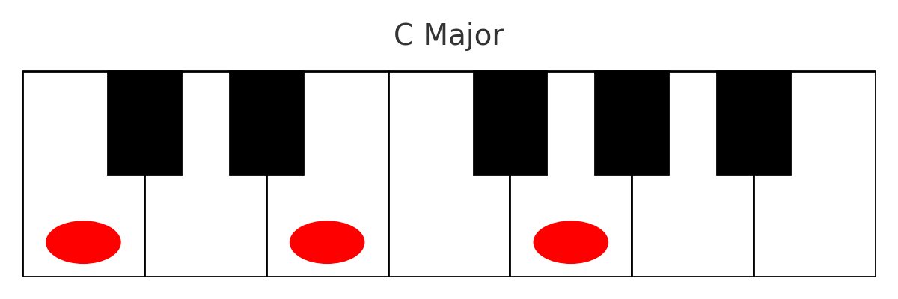
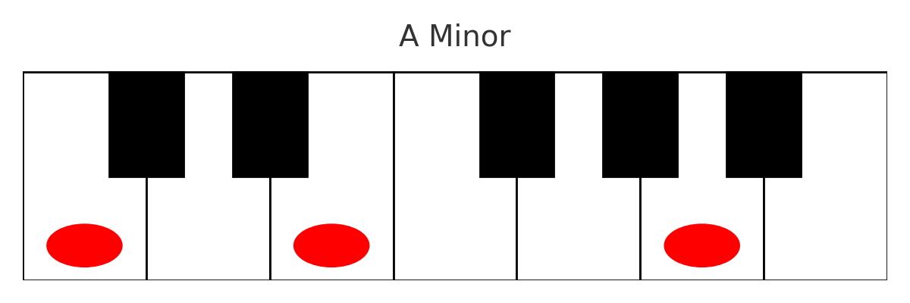
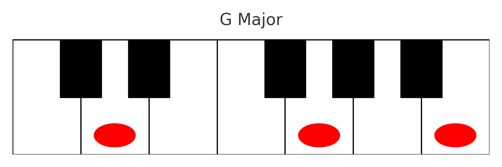
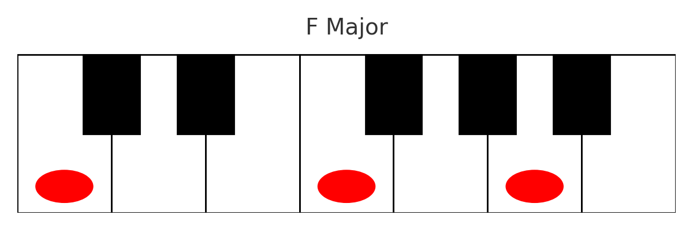
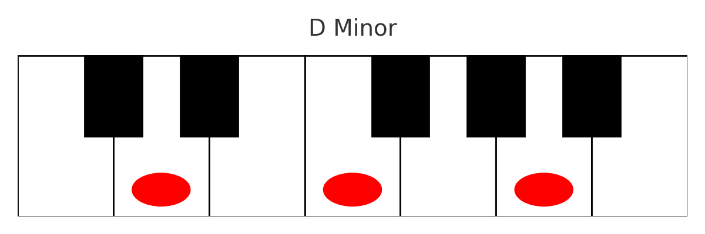
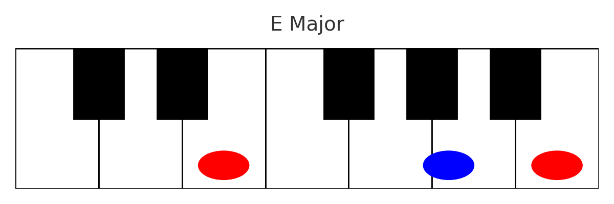
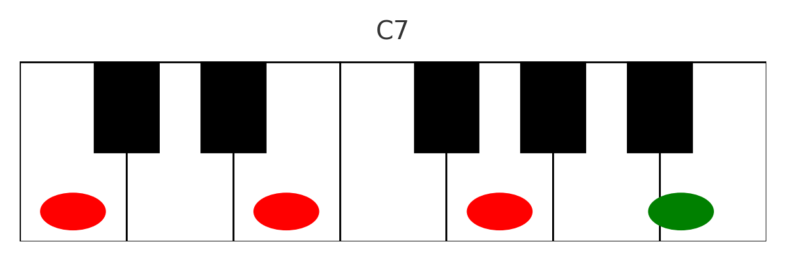
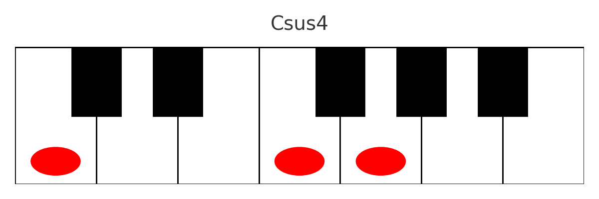

אקורד הוא שילוב של שלושה תווים או יותר הנשמעים יחד ויוצרים הרמוניה. האקורדים מחולקים לסוגים: מז'ור, מינור, דומיננטי, מוקטן, מוגדל, סאס, ואקורדים ג'אזיים מורחבים. כל אחד מהם יוצר אווירה שונה במוזיקה.
C Major

אקורד בסיסי בהרמוניה מערבית. הצליל בהיר ויציב. מורכב מהתו הראשי, טרצה גדולה וקווינטה.
A Minor

אקורד מינור טבעי. נשמע רך, עצוב או נוגה. דומה ל-C מג'ור אך מתחיל על A.
G Major

אקורד נפוץ בבלוז ורוק. משלב צליל חזק ומלא.
F Major

מוכר כמאתגר לנגינה בגיטרה, אבל פסנתר פשוט. יציב וחזק.
D Minor

מינור עדין. מכונה לעיתים 'האקורד העצוב ביותר'.
E Major

בעל אופי בוהק ורועש, נפוץ במוזיקה עממית ורוק.
C7

אקורד דומיננטי. יוצר מתח שדורש פתרון. משמש לקדנציה.
Csus4

אקורד תלוי (suspended). חסר טרצה ולכן מרגיש לא פתור.